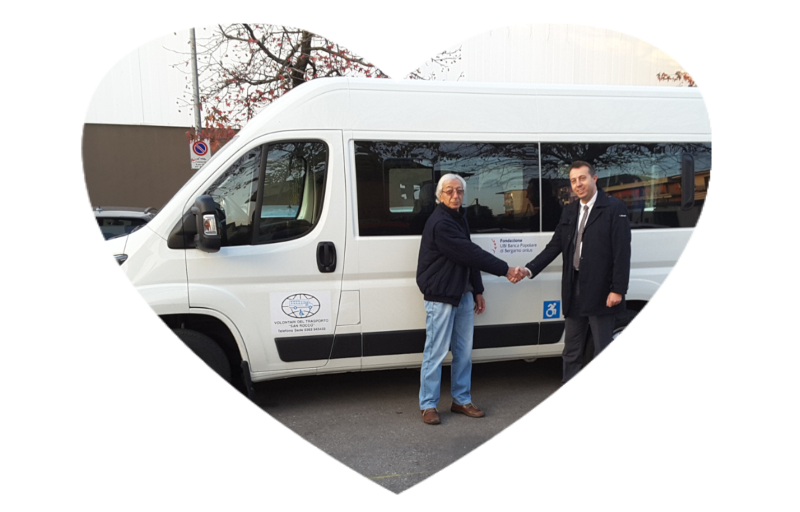

Tutto è iniziato nel 2004 con un pulmino a 9 posti, da all'ora
l'Associazione Volontari del Trasporto San Rocco ha visto aumentare il
proprio parco mezzi fino all'attuale, composto da ben 3 furgoni
equipaggiati per il sollevamento carrozzine e due auto.
Merito del grande impegno profuso dai numerosi Volontari che
nel tempo hanno portato il loro prezioso ed instancabile contributo,
persone che hanno visto nascere l'Associazione e sono ancora attive e
volontari da ricordare, passati lasciando il segno.
Le tante feste e manifestazioni organizzate per raccogliere fondi
destinati all'acquisto dei mezzi e le donazioni di illuminati privati,
hanno permesso di raggiungere importanti risultati quantitativi e
qualitativi, mettendo a disposizione dei richiedenti un servizio davvero
curato.
Grazie ad una Sede adeguata alle esigenze, messa a
disposizione dal Comune di Cividate al Piano, con il quale esiste una
convenzione, l'Associazione ha potuto radicarsi ed operare attivamente
sul territorio, portando un grande contributo sociale.
Le
Scuole si affidano a San Rocco per il trasporto con carrozzine, gli
Alunni della Primaria sono trasportati ai corsi di nuoto, servizi sono
offerti anche alla Scuola Materna e alla Casa di Riposo, senza,
ovviamente, dimenticare i privati.
Sono i numeri che descrivono l'impegno e la storia dell'Associazione
Volontari del Trasporto San Rocco:
Da menzionare anche l'impegno in ambito sportivo con il trasporto degli
Atleti Fard, impegnati nel torneo delle Regioni organizzato dal CSI
Cremona.
Come accennato, oltre l'impegno quotidiano dedicato
al trasporto, l'Associazione San Rocco ha organizzato, negli anni, molte
ed impegnative manifestazioni allo scopo di raccogliere fondi per
l'ampliamento ed il rinnovo del parco mezzi, tutti eventi gestiti in
concomitanza all'attività quotidiana, a dimostrazione della volonta e
serietà delle persone che vi operano.
Basta ricordare le quattro edizioni del Motogiro "Due Ruote per la
Solidarietà" eventi impegnativi e davvero unici che hanno visto sfilare
centinaia di motociclisti per le vie di Cividate al Piano e paesi
limitrofi.
Vanno senza dubbio elogiati anche i molti privati
che con le loro donazioni hanno creduto e sostenuto un progetto che si è
dimostrato efficace ed apprezzato dalla collettività, verso cui
l'impegno di tutti i Volontari dell'Associazione Trasporto San Rocco è
rivolto.
